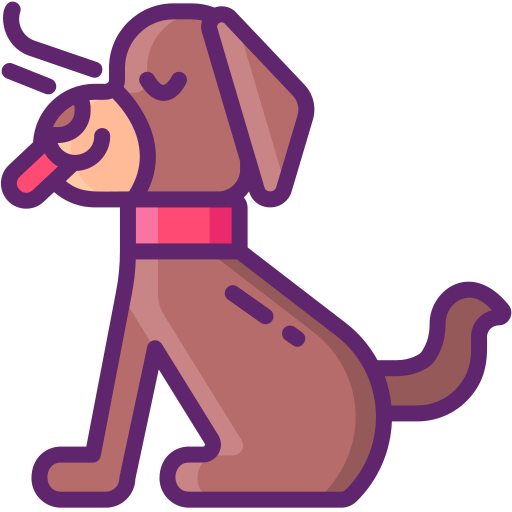
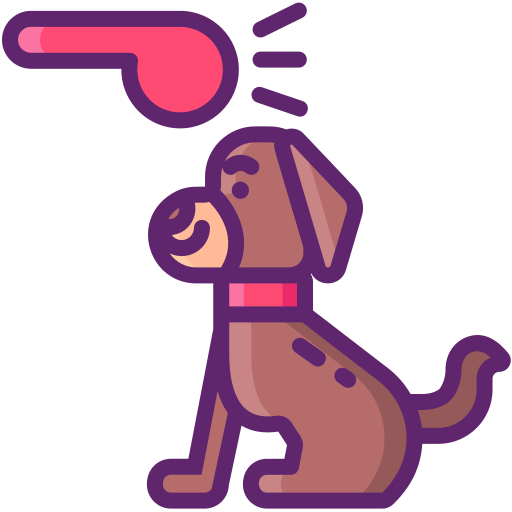
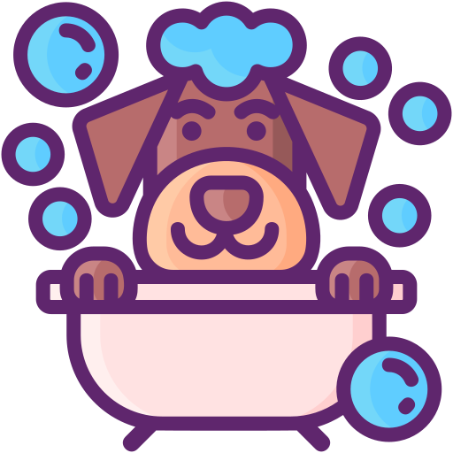
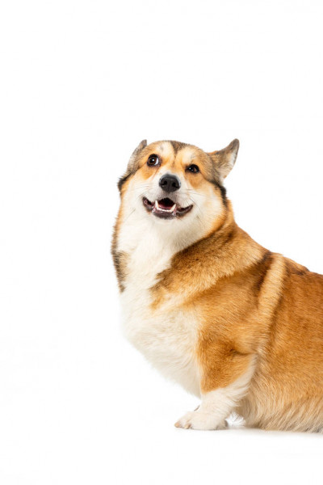

Вельш-корги-пемброк
большая собака в маленьком телеТакую характеристику чаще всего приходится слышать от владельцев этих собак. Удивительно, как в столь некрупном животном помещается столько любви, жизнерадостности, общительности и преданности человеку. А уж по уровню интеллекта и интуиции корги даст фору многим признанным помощникам человека из числа крупных служебных собак. Отличный характер, удивительные артистические способности, очаровательная внешность позволили представителям породы снискать любовь во многих странах мира.

Описание породы
Характер
Среди главных черт можно выделить активность животного, его высокий интеллект и удивительное дружелюбие к представителям рода человеческого. Корги очень любят детей. Они стоически терпят все проявления детского восторга и насыщенные игры. Первоначально пемброки являлись исключительно пастушьими собаками. Это род деятельности, который требует выносливости, сообразительности и умения работать в команде. Благодаря своему пастушьему прошлому у породы есть характерный признак – бесстрашие. Ваш питомец безо всяких сомнений и раздумий бросится в схватку даже с противником, значительно превосходящим его по размерам.
Дрессировка
Главный принцип в воспитании вельш-корги пемброка – категоричность и последовательность. Однажды что-то запрещенное не должно разрешаться потом.
Уход и гигиена
Несмотря на то, что вельш-корги пемброк – порода достаточно дорогая, каких-либо особо сложных требований по уходу за ней вы не найдете. Характерного запаха от этих собак практически нет, поэтому купать ее часто не потребуется.
Здоровье
Пемброка нельзя отнести к изнеженной страдающей многочисленными заболеваниями породе. Это крепкая рабочая выносливая собака. Если своевременно и в полном объеме вакцинировать питомца и регулярно посещать ветеринара, то особых проблем со здоровьем не возникнет.
Расходы в рублях *
* примерная стоимость| Разовые | За месяц | За год | За 12 лет | ||
|---|---|---|---|---|---|
| Щенок | 50 000 | - | - | 50 000 | |
| Место | 9 000 | - | 1 000 | 21 000 | |
| Аммуниция | 2 000 | - | 1 000 | 14 000 | |
| Корм | 2 000 | 3 000 | 36 000 | 434 000 | |
| Игрушки | 2 000 | 500 | 6 000 | 74 000 | |
| Грумминг | 2 000 | - | 1 000 | 14 000 | |
| Ветеринар | 7 000 | - | 5 000 | 67 000 | |
| Итого: | 74 000 | 3 500 | 50 000 | 674 000 |
Обратная связь
Если у тебя есть контакты хороших заводчиков, которые продают щенков корги по цене менее 100 000 рублей, пиши!
